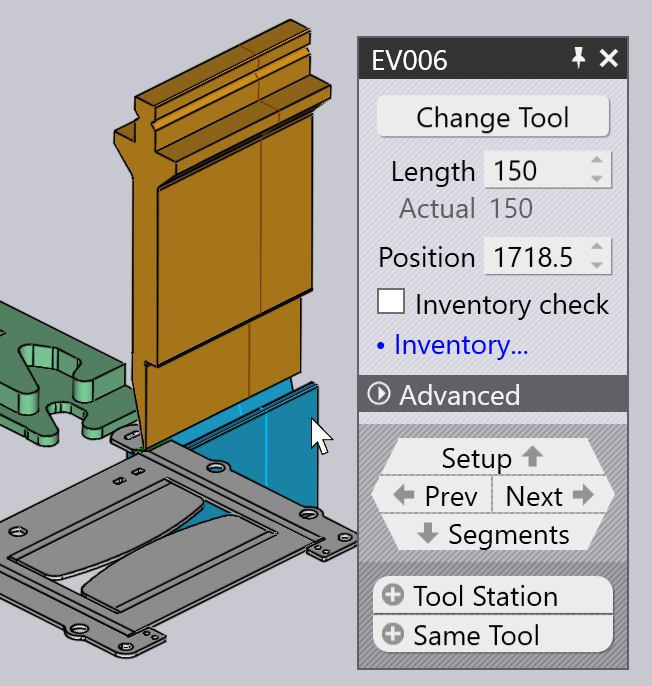

Δημιουργία δεδομένων κάμψης
Μπορείτε να δημιουργήσετε δεδομένα τεχνολογίας κάμψης για ένα τεμάχιο μεταλλικής πλάκας χρησιμοποιώντας τη μονάδα κάμψης. Αυτή η διαδικασία χαρακτηρίζεται επίσης ως εξοπλισμός του τεμαχίου για κάμψη. Ας υποθέσουμε ότι έχετε ήδη εγκαταστήσει ένα μηχάνημα, έχετε διαμορφώσει τη συλλογή εργαλείων και έχετε εισάγει ένα τεμάχιο CAD (2D ή 3D):

Μετάβαση σε Bend CAM
Τώρα, το τεμάχιο μπορεί να εξοπλιστεί για κάμψη πατώντας απλώς το πλήκτρο B. Το τεμάχιο είναι εξοπλισμένο με την προεπιλεγμένη καμπτική πρέσα που είναι η καμπτική πρέσα που έχετε χρησιμοποιήσει πιο πρόσφατα. Υπολογίζεται μια αλληλουχία εργαλείων, η ρύθμιση της κάμψης, οι θέσεις αναστολής, και θα πρέπει να δείτε ένα αποτέλεσμα όπως αυτό:

Εάν δεν υπάρχουν σφάλματα, το πρόγραμμα NC (και ενδεχομένως το φύλλο ρυθμίσεων) για το τεμάχιο δημιουργούνται επίσης και αποθηκεύονται στο φάκελο εξερχομένων που έχει ρυθμιστεί για αυτό το μηχάνημα. Ακολουθεί μια ενότητα από μια χαρακτηριστική ρύθμιση τεμαχίου sheet[1] (επίσης γνωστό ως αναφορά κάμψης).
| Ανατρέξτε επίσης στον πίνακα Ροή εργασιών, στον οποίο μπορείτε να αποκτήσετε πρόσβαση πατώντας το πλήκτρο W. Αυτός παρέχει αναλυτικότερο έλεγχο της δημιουργίας δεδομένων τεχνολογίας κάμψης και επιλογές για τη δρομολόγηση του τεμαχίου μέσω του συστήματος CAM λέιζερ ή κατανομής. |
Περαιτέρω εργασίες
Ακολουθεί μια σύντομη περίληψη ορισμένων από τις εργασίες που μπορείτε να εκτελέσετε όταν ένα τεμάχιο έχει εξοπλιστεί για κάμψη.
-
Εάν κάνετε κλικ στο Spacebar, δρομολογείται μια προσομοίωση κάμψης. Μπορείτε επίσης να χρησιμοποιήσετε τα στοιχεία ελέγχου προσομοίωσης στον Πλοηγό κάμψης για εκκίνηση, διακοπή ή επαναφορά της προσομοίωσης:

-
Εάν υπάρχουν προειδοποιήσεις ή σφάλματα, εμφανίζονται στον Πλοηγό κάμψης και μπορείτε να τα προβάλλετε και να τα αντιμετωπίσετε με κλικ στα αντίστοιχα κελιά:

-
Μπορείτε να επεξεργαστείτε τα εργαλεία κάμψης (στιγείς και μήτρες), τη ρύθμιση των αναστολέων ή τη ρύθμιση μέτρησης γωνιών κάνοντας απλώς κλικ απευθείας σε αυτό το αντικείμενο στην προβολή προσομοίωσης:
 -
Μπορείτε να αλλάξετε το μηχάνημα κάνοντας κλικ στο όνομα του μηχανήματος στην παρακάτω κάτω από το τεμάχιο και επιλέγοντας διαφορετικό μηχάνημα:

-
Κάνετε κλικ στο εικονίδιο Ρυθμίσεις
 στη
γραμμή εργαλείων κατά μήκος της αριστερής πλευράς για να επεξεργαστείτε πρόσθετες ρυθμίσεις
για κάθε κάμψη (ή για να επεξεργαστείτε τις προεπιλεγμένες ρυθμίσεις που χρησιμοποιούνται για αυτήν την καμπτική πρέσα
ή για ολόκληρη την εφαρμογή TecZone Bend).
στη
γραμμή εργαλείων κατά μήκος της αριστερής πλευράς για να επεξεργαστείτε πρόσθετες ρυθμίσεις
για κάθε κάμψη (ή για να επεξεργαστείτε τις προεπιλεγμένες ρυθμίσεις που χρησιμοποιούνται για αυτήν την καμπτική πρέσα
ή για ολόκληρη την εφαρμογή TecZone Bend). -
Κάνετε κλικ στο εικονίδιο Ένδειξη
 στην
την αριστερή γραμμή εργαλείων για να επεξεργαστείτε την προβολή του μηχανήματος - μπορείτε να ενεργοποιείτε ή να απενεργοποιείτε την προβολή των
πρόσθετων στοιχείων όπως η ράγα της μήτρας, η μπάρα κάμψης, το στήριγμα πίσω αναστολέα.
Μπορείτε επίσης να μετατρέψετε διάφορα στοιχεία σε ημιδιαφανή.
στην
την αριστερή γραμμή εργαλείων για να επεξεργαστείτε την προβολή του μηχανήματος - μπορείτε να ενεργοποιείτε ή να απενεργοποιείτε την προβολή των
πρόσθετων στοιχείων όπως η ράγα της μήτρας, η μπάρα κάμψης, το στήριγμα πίσω αναστολέα.
Μπορείτε επίσης να μετατρέψετε διάφορα στοιχεία σε ημιδιαφανή.
Όταν δημιουργείται μια λύση κάμψης χωρίς σφάλματα δημιουργούνται αυτόματα το πρόγραμμα NC του τεμαχίου και ένα φύλλο ρύθμισης για την κάμψη. Μπορείτε να χρησιμοποιήσετε τη σελίδα ρυθμίσεων Bend Outputs για να ρυθμίσετε αν το πρόγραμμα NC τεμαχίου και το φύλλο ρυθμίσεων θα δημιουργούνται αυτόματα και να διαμορφώσετε επίσης τον προορισμό αυτών των εξαγόμενων στοιχείων και τη μορφή των αναφορών. Εάν έχει δημιουργηθεί κωδικός, το κουμπί nc-code στην αριστερή γραμμή εργαλείων είναι απενεργοποιημένο:

Καθώς τροποποιείται το τεμάχιο, αυτό το κουμπί ενεργοποιείται και πάλι και μπορείτε να δημιουργήστε ξανά το πρόγραμμα NC κάνοντας ξανά κλικ σε αυτό το εικονίδιο (ή πατώντας το πλήκτρο C).